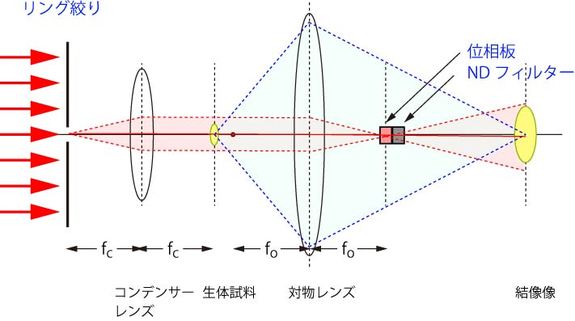

先ほど説明したように，
位相板の位置，大きさとリング絞りの位置，大きさがきちんとマッチしてその効果が発揮される
と説明しました．
対物レンズの大きさによって，内部の位相板の大きさも違うのでしょう．
それによって，リング絞りもそれにあったものに変更しなくてはなりません．
しかし．．．もし光軸に絞りを持ってきたなら，１種類でいいのでは？とふと疑問に思いました．
図で示すと以下のようになります．

これなら，
リング絞りも一種類
位相板も一種類
となりますよね？
一つの心配は，点光源となってしまうので，光量不足になる恐れがありますね．
ならば．．．
こういうのはいかがでしょう？
最初から平行光源を用意すれば，光量不足も問題ない．．．．
平行光源？レーザーを使えばいいのでは？位相もそろっているし．．．
一つ心配は，レーザーの強度分布ですね．．．レーザーの強度分布は均一ではなく，中央が一番近い．．．
どうでしょう？